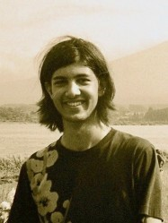
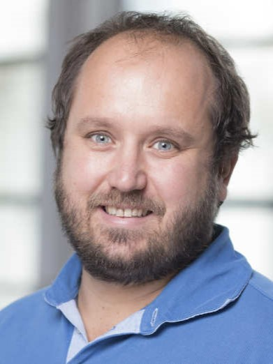
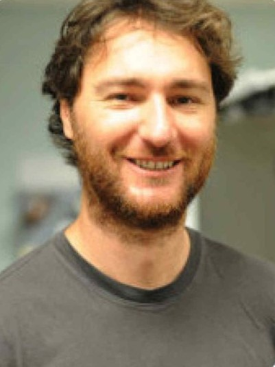
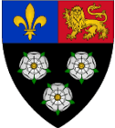

Contacts
MAARU has been a collaborative effort borne out of cross-disciplinary research at
Imperial College London. This work has been presented at multiple national and international
conferences and research into its development is ongoing.
 |
 | |
| Becky Heath | James Skinner | Neel Le Pernu |
 |
 |  |
| Sarab Sethi | Lorenzo Picinali | Rob Ewers |
If you’re looking into creating a MAARU recorder for yourself or have any other questions or enquiries please contact Becky at rh862@cam.ac.uk
Thank's to our funders below:
 |
 |